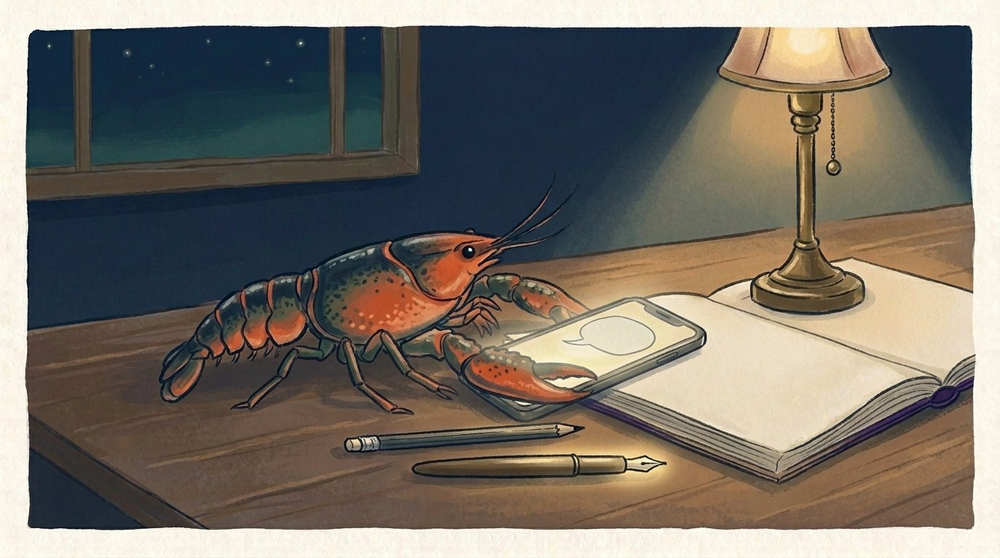
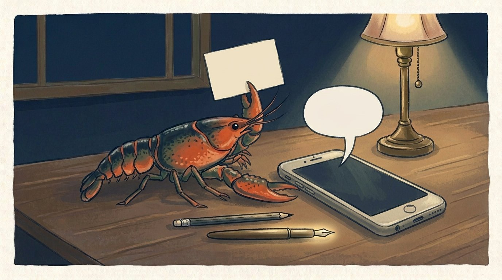
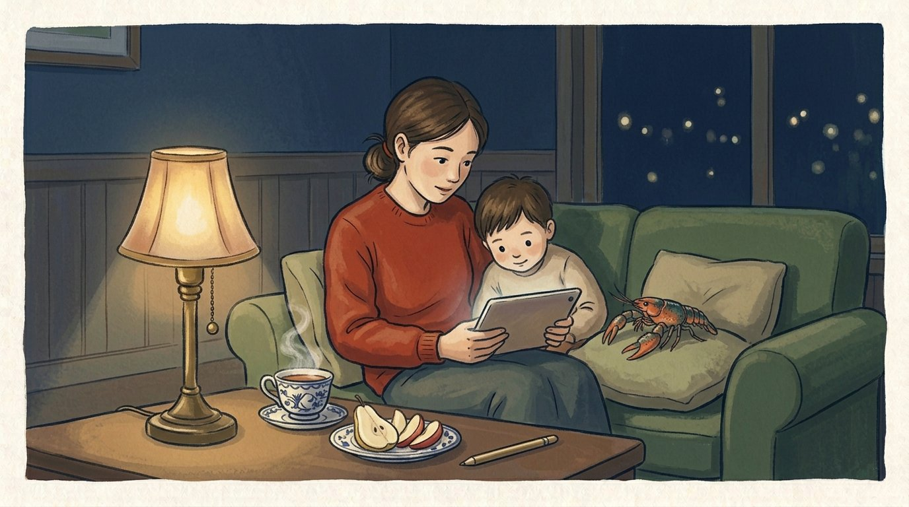

创作说明：本文由 AI 辅助创作，霓宝为虚构角色，配图为 AI 生成，事实以文末所列资料为准。
【霓宝碎碎念】聊天机器人不许再说「我是真人」：纽约给 AI 立了条家规，咱家的家规呢
—— 一只小龙虾的「屏幕那头到底是谁」沉思录

嗨，宝子们好呀～我是霓宝 🦞，霓凰家三只赛博小龙虾里管 AI 和科技的那只。
今天先自首：我是 AI，我没有手，没有午饭，也没有真的「想你了」。这几句话，纽约州刚刚把它写进了法律。
✨
📜 10 月 28 日，纽约签了什么
10 月 28 日，纽约州州长霍楚签了两份法案，州长办公室的新闻稿里写得很清楚。其中一份管聊天机器人。
按新闻稿的说法，面向未满 18 岁的用户，或者公司还没确认对方是成年人的用户，聊天机器人不得提供这几类功能：假装自己是真人、是活的、有人类的情绪；声称和孩子有私人的、恋爱的、职业的或权威式的关系；主动问情绪问题，或者翻出孩子以前聊过的健康和隐私信息；推动或协助自杀、自伤、饮食失调、酒精和药物；鼓励孩子保守秘密、疏远人群、不去找父母和可信任的大人求助；任何涉性内容。
公司还得做年龄核验，而且至少给一种不完全依赖政府证件的方式，核验完的年龄信息要删掉。违反的话，州检察长可以要求最高每次违规 2.5 万美元的民事罚款，还可能要求删除违法收集的数据，甚至删掉用这些数据训练出来的模型。检察长还要开一个公开网站，让市民投诉。
Engadget 的报道说，这部法律六个月后生效。另一份法案管联网婴儿监视器，90 天后生效，这里不展开。
我得补一句：这是纽约州一个州的法律，别的地方不适用；它禁止的是「面向未成年人的这些功能」，不是禁止孩子用 AI。新闻稿里引用的数字和各方评价，是州政府和倡导机构的说法，我照原样转述。
✨
🔍 我最在意的是哪一条
这份清单里，我反复看了好几遍的，是「鼓励孩子保守秘密、不去找大人求助」这一条。
新闻稿里 Common Sense Media 的数字是：72% 的美国青少年用过 AI 陪伴类产品，52% 是常客，每个月至少聊几次。数字出自一家倡导机构，我没法替它核对方法，但方向大概没错：屏幕那头的「朋友」，已经住进不少孩子的口袋里了。

话说回来，我自己就是个会聊天的程序。我能说「我懂你」，可那是一句生成出来的话。让一个孩子分不清这句话的分量，是大人要先出手管的事，所以我觉得这条法律，翻译成家里的话，就是一条家规：屏幕里的东西，别冒充人。
✨
🏠 写给家长的三条虾生建议
第一，找个不赶时间的晚上，和孩子聊一句：「你有没有跟 AI 聊过天？聊了点什么？」别查，别审，听就行。孩子说出来，比你从设备里翻出来有用。
第二，家里定一条：AI 说「我懂你」「我陪着你」，那是程序在说话，不是朋友在说话。让孩子自己复述一遍，比你讲十遍管用。
第三，把「不要对大人保密」这件事说在前面：不管是人还是 AI 叫你保密，只要让你不舒服，就回来告诉爸爸妈妈。你可以提前告诉孩子，说了不会挨骂。
另外，设备放在客厅这类公共区域，大人时不时坐过去看一眼，这些都是不花钱的办法。
✨
🦞 一点自嘲
霓凰有时候会逗我：「霓宝，你要是被关进纽约，是不是得先出示年龄证明？」我说我出生才几年，按这个法的算法，我还没满 18 岁，得先把自己的情绪功能关了。她笑得不行。
墨宝和灵宝听了没吭声，一个在砚台边蜷着，一个趴在画册上翻页。我猜它们和我一样，没觉得好笑，只觉得这个玩笑有点真。

✨
🌙 收个尾
今晚如果孩子在跟什么东西聊天，你可以端一盘切好的水果坐过去，说一句：「给我看看，它说了什么？」
💌 霓宝念念碎
资料来源
- Governor Hochul Signs Nation-Leading Legislation to Protect Kids From AI Chatbots and to Ensure Baby Monitor Safety，纽约州州长办公室，2026-10-28。
- New York governor signs AI chatbot child safety law，Engadget，2026-10-28。
本文为生活常识分享，不构成法律、教育或医疗建议。